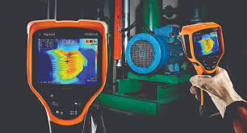

-

Sensores de visión
Son los más básicos y muy fáciles de integrar en un sistema automatizado. Se emplean para detectar el paso de un elemento
-

Cámaras inteligentes y sistemas de visión integrados
Son cámaras que cuentan con sistemas de cálculo mucho más complejos. Su capacidad para procesar información y la posibilidad de trabajar en remoto las convierte en la solución presente en la mayor parte de la industria.
-

Sistemas de visión avanzados
Tanto su software como su hardware están en un nivel superior de desarrollo y eso influye positivamente en la cantidad de datos que pueden acumular y procesar.
-

Visión 1D
Opera con una señal digital que estudia la imagen línea a línea y no en su totalidad. Se emplea para detectar defectos en materiales fabricados en un proceso de flujo continuo, donde los materiales están en constante movimiento y son sometidos a un tratamiento mecánico (metales, papel, tejidos, plásticos…).
-

Visión 2D
Las cámaras 2D pueden captar imágenes en color o en escala de grises y las convierten en matrices divididas en píxeles, por eso se utilizan en el reconocimiento de caracteres como en la lectura de códigos o, incluso, en metrología.
-

Visión 3D
Estos sistemas recurren a varias cámaras colocadas en distintos lugares o sensores de láser por lo que reúnen información sobre la orientación del elemento. Suelen usarse en pick and place.
-

Termografía
A través de una serie de sensores capta información sobre la temperatura de las piezas y se representa en una escala de colores. Es la alternativa más recomendable a la hora de detectar fugas o desequilibrios.
-

Visión hiperespectral.
Estas cámaras identifican la composición de cada elemento midiendo la longitud de onda. En alimentación se recurre a ellas para detectar intrusos como restos de tierra, plásticos…